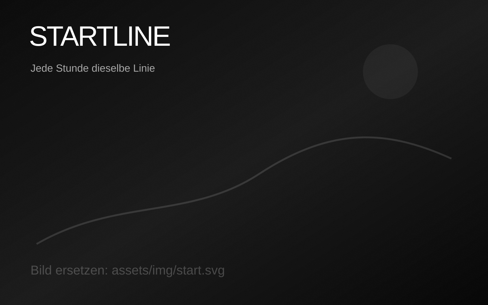
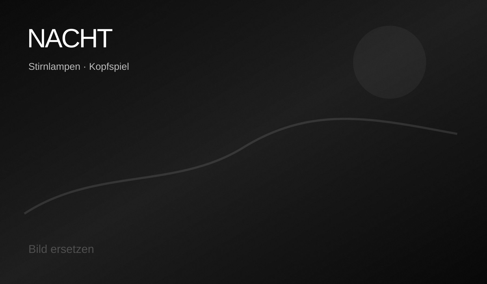
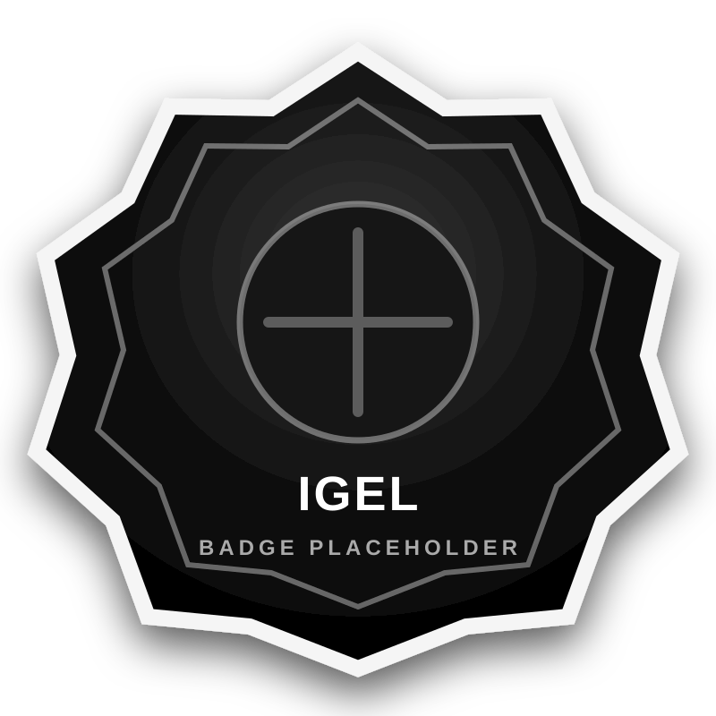
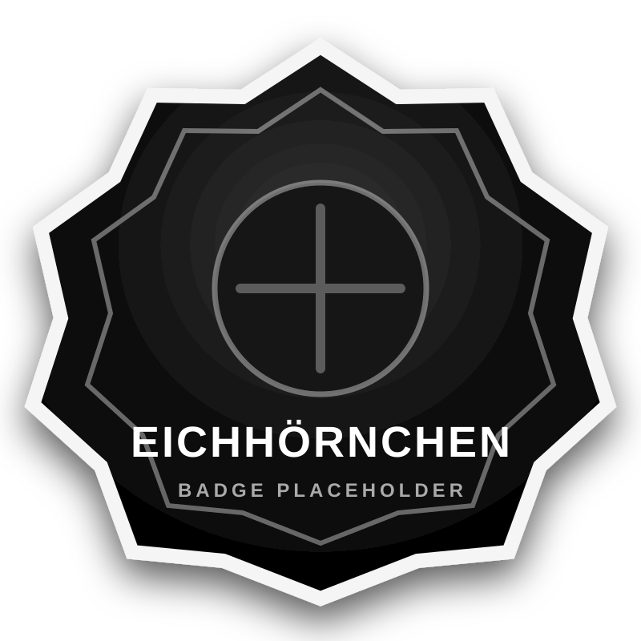
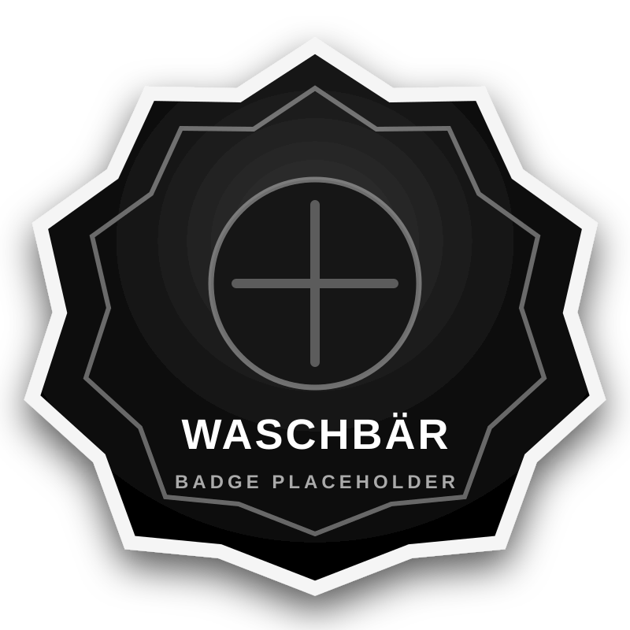
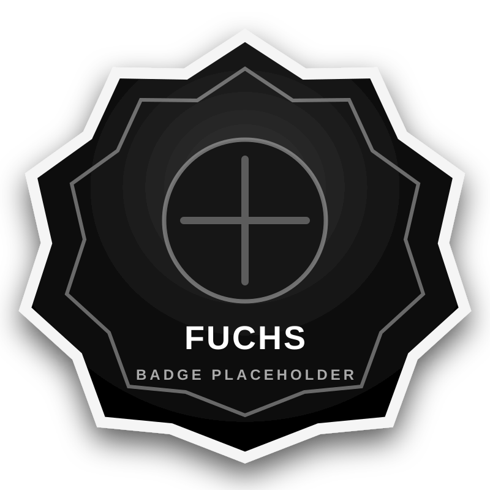
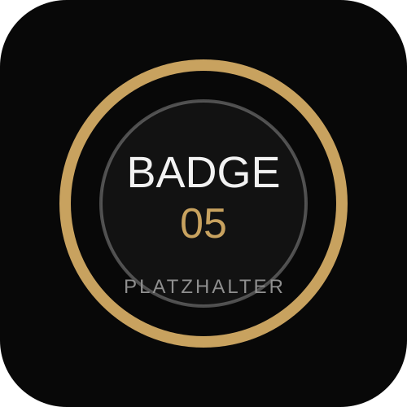
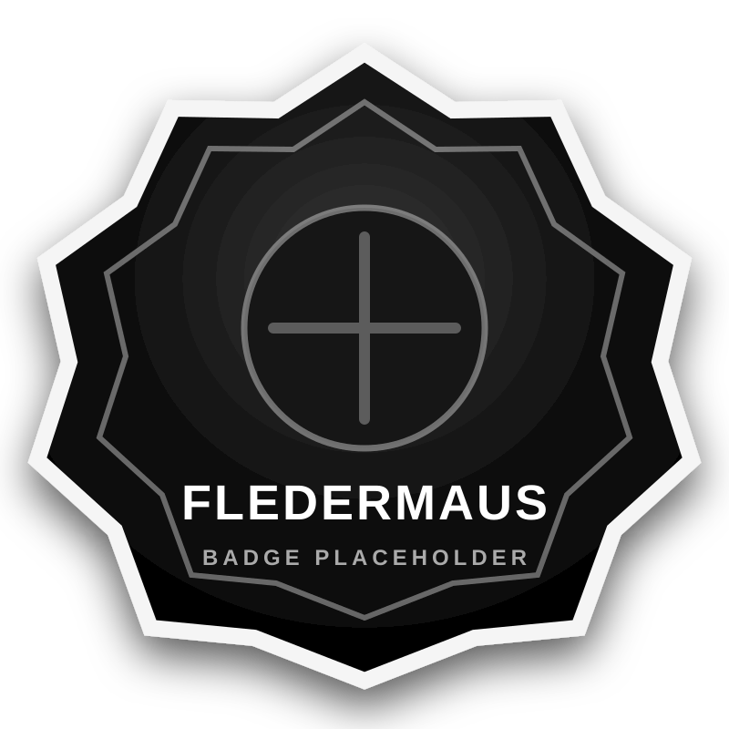
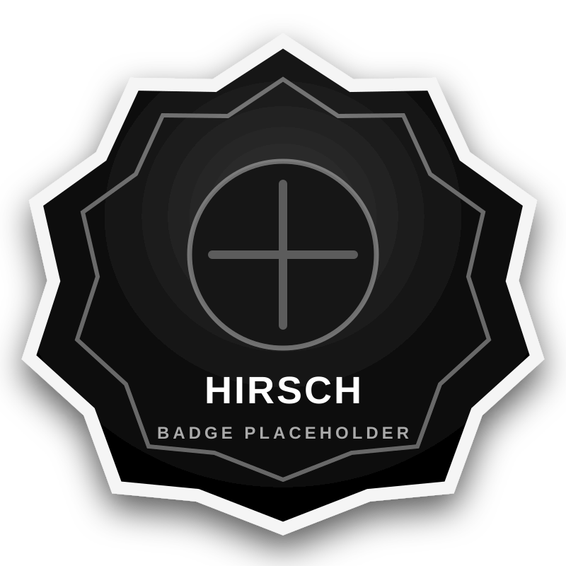
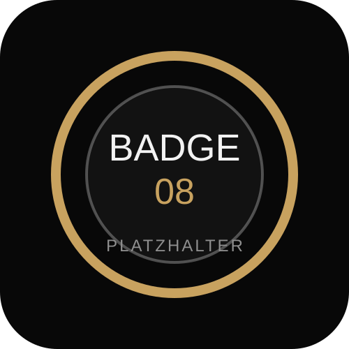

01
6,7 km Runde
Ein Rundkurs über befestigte Wege, Stock, Stein und Wald.
Backyard Ultra · Klein Lafferde · 02.05.2026
6,7 km. Jede Stunde. Sonnenaufgang. Tröte. Neustart. So lange, bis nur noch eine Person steht.
Alle starten gemeinsam. Alle haben 60 Minuten. Dann ruft die Tröte wieder zur Startlinie.
Das Rennen endet nicht nach einer festen Distanz, sondern erst, wenn nur noch eine Person eine weitere Runde schafft.
Die LLC ist kein klassischer Wettkampf gegen die Uhr. Jede Runde beginnt neu. Jede volle Stunde stellt dieselbe Frage: Gehst du wieder an die Startlinie?
Ein Rundkurs über befestigte Wege, Stock, Stein und Wald.
Wer rechtzeitig zurück ist, darf die Pause bis zum nächsten Start frei nutzen.
Nach jeder Stunde starten alle verbliebenen Läufer*innen gemeinsam wieder los.
Das Rennen endet, wenn nur noch eine Person eine Runde im Zeitlimit schafft.
Die LLC lebt nicht nur von der Strecke. Sie lebt vom Start-Ziel-Bereich, von Crews, kurzen Gesprächen, müden Blicken und dieser einen Frage kurz vor jeder vollen Stunde.


Die Platzhalter können direkt durch echte Fotos ersetzt werden. Die Lightbox ist schon eingebaut.
Hier können echte Erfahrungsberichte aus 2023, 2024 und 2025 rein. Mit Name, Runden, Jahr und Foto wird daraus eine starke Story-Sektion.
„Irgendwann läufst du nicht mehr gegen andere. Du führst nur noch Gespräche mit dir selbst.“
„Die härteste Runde war nicht die längste. Es war die, bei der ich fast nicht wieder gestartet wäre.“
„Backyard klingt simpel. Bis die Tröte wieder ruft.“
Die Felder sind bewusst neutral angelegt. Später ersetzt du nur die SVG-Dateien durch die finalen Badges.








Die Lafferde Loop Challenge ist ein Backyard Ultra des TSV Klein Lafferde. Start ist am 02.05.2026 um 05:47 Uhr bei Sonnenaufgang.
Ort: Münstedter Weg 17, 38268 Lengede.
6,7 km Rundkurs über befestigte Wege, Stock, Stein und Wald. Die Strecke wird mit Straßenmalkreide markiert. Am Ende bleibt jede*r selbst verantwortlich, auf der Strecke zu bleiben.
Alle Teilnehmer*innen haben 60 Minuten pro Runde. Wer die Runde nicht im Zeitlimit schafft oder nicht zum nächsten Start im Startbereich ist und die Startlinie überquert, scheidet aus.
Kein persönlicher Support auf der Strecke. Keine Hilfsmittel wie Stöcke.
Teilnahme nur auf Einladung. Bei Interesse Mail mit Name, Vorname, Geschlecht, Jahrgang, ggf. Verein und Lauferfahrung an lafferdeloopchallenge@gmail.com.
Startgeld: 15 Euro. Zusätzlich freiwillige Spende an das Kinderhospiz Löwenherz.
Teilnehmer*innen können sich eine Basis mit Verpflegung direkt neben dem Start-Ziel-Bereich aufbauen. Duschen und Toiletten können im Vereinsheim des TSV Klein Lafferde genutzt werden.
Übernachtung mit Zelt, Auto oder nach Absprache in der kleinen Turnhalle möglich.
Gewinner*in ist, wer als Letzte*r eine Runde im Zeitlimit beendet. Alle anderen werden offiziell als DNF gewertet; die zurückgelegte Distanz erscheint trotzdem auf der Ergebnisliste.
Die Ergebnisliste wird an die DUV Ultramarathon-Statistik übermittelt.
Es wird keine Haftung für Unfälle, Verletzungen aller Art, Diebstahl oder sonstige Schäden übernommen. Teilnehmer*innen akzeptieren diesen Haftungsausschluss mit Überqueren der Startlinie.
Platzhalter – folgt nach dem Event.
Nein. Es geht nicht um Tempo, sondern darum, jede Runde innerhalb von 60 Minuten zu schaffen und wieder zu starten.
Ja, im Start-Ziel-Bereich. Persönlicher Support auf der Strecke ist nicht erlaubt.
Sportler*innen sind für ihre Verpflegung selbst verantwortlich. Im Start-Ziel-Bereich gibt es Wasser, Apfelschorle und Iso.
Ja. Zelt, Auto oder nach Absprache die kleine Turnhalle sind möglich.
Du wirst offiziell als DNF gewertet, deine gelaufene Distanz erscheint aber auf der Ergebnisliste.
Ja. Die Ergebnisliste wird an die DUV Ultramarathon-Statistik übermittelt.
Die Starterliste ist voll. Wer Interesse hat, kann sich per Mail für die Warteliste melden.
{kind=link}
{kind=link}
{kind=link}
{kind=link}
{kind=link}
{kind=link}